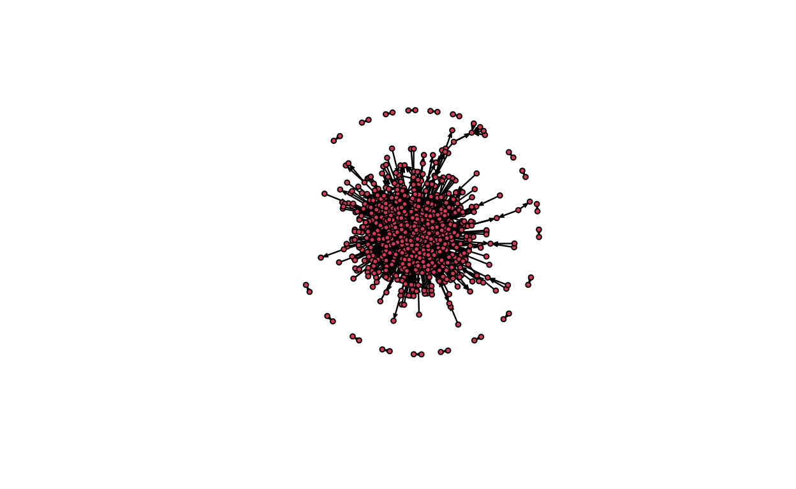
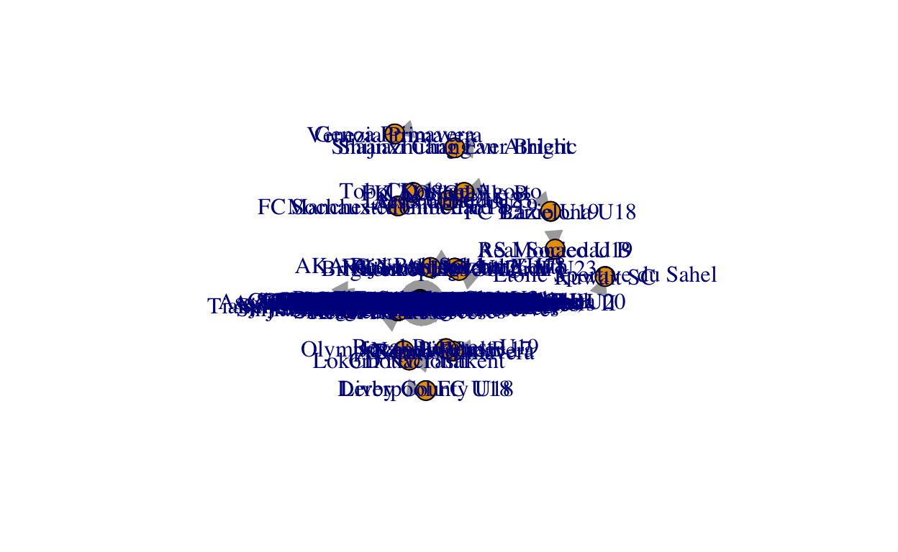
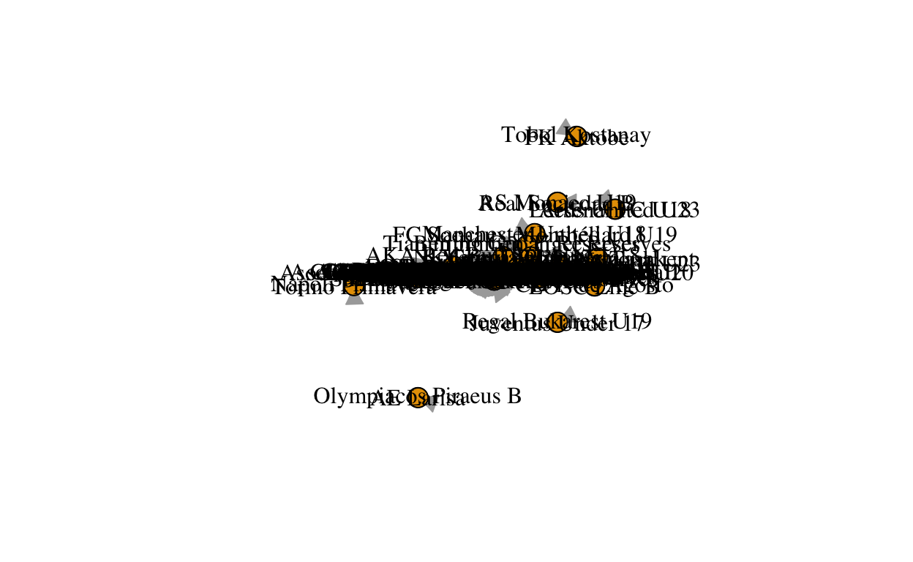
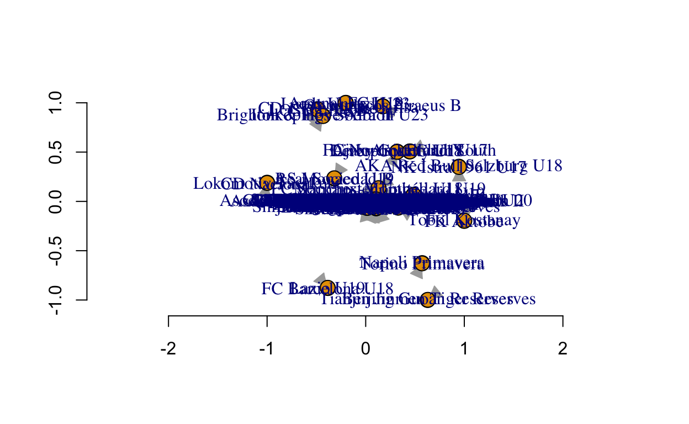
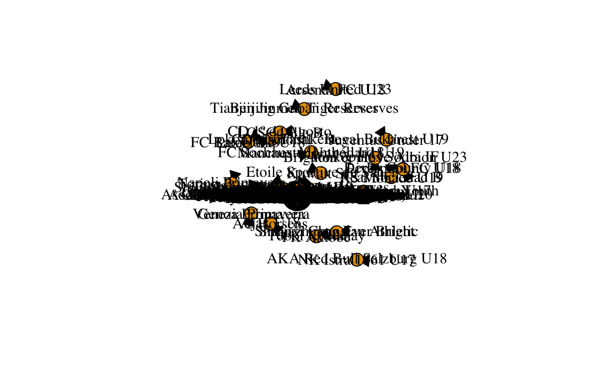

Exploring a network of football teams and the transactions they made from 2018-2021. An Edgelist maybe?
I begin by converting the data into an edgelist format. I select the club from and club to columns which are our nodes in this case. The relationship that I’m interested in is where from and where to has the majority of transfers taken place across various places. After selecting the from and to columns, I select the players, the transfer fee and the season in which the transfer took place. I also remove loan and free transfer as they don’t seem relevant at the moment.
#load data from CSV
transfers <- read_csv("/Users/isha/Desktop/GitHub/transfernetworks.csv")
head(transfers)
# A tibble: 6 × 12
name position age market_value country_from league_from club_from
<chr> <chr> <dbl> <chr> <chr> <chr> <chr>
1 Jack… Left Wi… 25 65000000 England Premier Le… Aston Vi…
2 Rome… Centre-… 28 100000000 Italy Serie A Inter Mi…
3 Jado… Left Wi… 21 100000000 Germany Bundesliga Borussia…
4 Duša… Centre-… 22 70000000 Italy Serie A ACF Fior…
5 Lion… Right W… 34 80000000 Spain LaLiga FC Barce…
6 Raph… Centre-… 28 70000000 Spain LaLiga Real Mad…
# … with 5 more variables: country_to <chr>, league_to <chr>,
# club_to <chr>, fee <chr>, year <dbl>#select relevant data for edgelist format
data <- transfers %>%
select(club_from, club_to, name,fee) %>%
filter(fee != "free transfer") %>%
filter(fee != "loan transfer") %>%
filter (fee != 0)
data$fee <- as.numeric(data$fee)
data <- data %>%
filter(fee != is.na(fee))
any(is.na(data$fee))
[1] FALSE#create league names as node attributes
#node1 <- transfers$league_from
#node2 <- transfers$league_to
#nodes <- c(node1, node2)
#node_attr <- unique(nodes)
The edgelist I created consists of 867 nodes and 4386 ties. The edge attributes are the players who are being transferred. The weight of the edges is the fee for which they were transferred. The edgelist is directed because the players are transferring from one team to another.
#convert data into matrix format
data.mat <- as.matrix(data)
#create igraph object from data
ig <- graph_from_data_frame(data.mat, directed = TRUE)
# add edge attribute weight i.e transfer fee
ig <- set_edge_attr(ig, "weight", value = na.omit(data$fee))
# add edge attribute season of transfer
#ig<- set_edge_attr(ig, "season", value = na.omit(data$season))
# add node attribute i.e league the club belongs to
#set_vertex_attr(ig,"league" ,value = node_attr)
#delete edge attribute that was automatically being created in addition to weight
ig <- delete_edge_attr(ig, "fee")
#check summary of the igraph object
summary(ig)
IGRAPH a9507fb DNW- 867 4386 --
+ attr: name (v/c), name (e/c), weight (e/n)Here’s an attempt to plot the network
#convert ig network into intergraph object to coerce with statnet
network <- intergraph::asNetwork(ig)
#plot intergraph object
plot(network)

#plot igraph object
plot(ig)

The network consists of 867 nodes and 4386 edges. This means that there are 867 football clubs in our network and we are going to be expl
# look at the dyad census
dyad_census(ig)
$mut
[1] 201
$asym
[1] 3468
$null
[1] 371742There are 201 mutual, 3468 asymmetrical and 371742 dyads. Elaborate Explanation
triad_census(ig)
[1] 105140687 2584373 450247 12854 17067 27123
[7] 4389 3716 1486 339 380 182
[13] 194 306 134 28triangles(ig)
+ 8007/867 vertices, named, from a9507fb:
[1] SL Benfica
[2] Borussia Dortmund
[3] Eintracht Frankfurt
[4] SL Benfica
[5] Borussia Dortmund
[6] PSV Eindhoven
[7] SL Benfica
[8] Borussia Dortmund
[9] CA Boca Juniors
[10] SL Benfica
+ ... omitted several verticesAdd Explanation
The results suggest that the network is directed, i.e players are transferring from one club to another.
The network is weighted. The weight of the transfer is the fee for which the transfer was made.
The network is not bipartite which mean that they transfers are not in sets- there is a flow of players.
#get global clustering cofficient: igraph
transitivity(ig, type="global")
[1] 0.1088854#get average local clustering coefficient: igraph
transitivity(ig, type="average")
[1] 0.1058294The global transitivity of the graph is 0.1088854 which is the ratio of triangles connected to triangles
the average transitivity 0.1058294 is the transitivity of the local triad clusters, i.e. the ratio of local triangles to all connected triangles.
The average path length in the weighted network is 5689620. Add Interpretation
[1] 5689620The distances function enables us to look at the distance travelled between two nodes. Let’s explore some distances between football clubs of various leagues.
shortest_paths(ig,"Chelsea FC", "Liverpool FC")
$vpath
$vpath[[1]]
+ 6/867 vertices, named, from a9507fb:
[1] Chelsea FC Spartak Moscow SC Freiburg
[4] 1.FC Union Berlin FC Schalke 04 Liverpool FC
$epath
NULL
$predecessors
NULL
$inbound_edges
NULLThe distance between Liverpool FC and FC Porto is approximately 5 nodes.
distances(ig,"Chelsea FC", "Real Madrid")
Real Madrid
Chelsea FC 8e+05The distance between Chelsea FC and Real Madrid is 3.8 nodes.
distances(ig, "Bayern Munich", "Chelsea FC")
Chelsea FC
Bayern Munich 1050000[1] 5689620The distance between Chelsea and FC Barcelona is 1.6 nodes.
names(igraph::components(ig))
[1] "membership" "csize" "no" igraph::components(ig)$no
[1] 20igraph::components(ig)$membership
Aston Villa
1
Inter Milan
1
Borussia Dortmund
1
ACF Fiorentina
1
Real Madrid
1
RB Leipzig
1
FC Barcelona
1
Brighton & Hove Albion
1
Manchester City
1
Stade Rennais FC
1
FC Porto
1
Eintracht Frankfurt
1
Juventus FC
1
Olympique Lyon
1
Chelsea FC
1
Sporting CP
1
Atlético de Madrid
1
Norwich City
1
Udinese Calcio
1
Tottenham Hotspur
1
Bayer 04 Leverkusen
1
Everton FC
1
Red Bull Salzburg
1
PSV Eindhoven
1
CSKA Moscow
1
Burnley FC
1
Hertha BSC
1
Sevilla FC
1
SS Lazio
1
Southampton FC
1
Arsenal FC
1
Manchester United
1
Sheffield United
1
LOSC Lille
1
Borussia Mönchengladbach
1
Brescia Calcio
1
Hellas Verona
1
Sport Club Internacional
1
FC Schalke 04
1
FC Barcelona B
1
Real Betis Balompié
1
Atalanta BC
1
Zenit St. Petersburg
1
Paris Saint-Germain
1
Fulham FC
1
AFC Bournemouth
1
Dynamo Kyiv
1
Chelsea FC U23
1
Club Brugge KV
1
VfB Stuttgart
1
Ajax Amsterdam
1
Clube de Regatas do Flamengo
1
Bologna FC 1909
1
Getafe CF
1
CA River Plate
1
FC Empoli
1
CA Vélez Sarsfield
1
VfL Wolfsburg
1
GNK Dinamo Zagreb
1
SL Benfica
1
West Bromwich Albion
1
Blackburn Rovers
1
RC Strasbourg Alsace
1
SCO Angers
1
Leicester City
1
AS Roma
1
RSC Anderlecht
1
KAA Gent
1
RC Lens
1
AZ Alkmaar
1
Celtic FC
1
Liverpool FC
1
FC Dallas
1
Standard Liège
1
Wolverhampton Wanderers
1
Montpellier HSC
1
Rubin Kazan
1
Sociedade Esportiva Palmeiras
1
AS Monaco
1
Grêmio Foot-Ball Porto Alegrense
1
FC Nordsjaelland
1
Stade Brestois 29
1
FC Basel 1893
1
SC Freiburg
1
Reading FC
1
Lokomotiv Moscow
1
Stoke City
1
Rangers FC
1
Stade Reims
1
Fluminense Football Club
1
1. FC Köln
1
Vitória Guimarães SC
1
FK Rostov
1
Vitória Guimarães SC B
1
US Sassuolo
1
FC Copenhagen
1
PAOK Thessaloniki
1
FC Nantes
1
SC Braga
1
Club Atlético Independiente
1
Feyenoord Rotterdam
1
Santos FC
1
Red Bull Bragantino
1
SV Werder Bremen
1
FC Porto U19
1
Pogon Szczecin
1
1.FSV Mainz 05
1
SK Slavia Prague
1
UC Sampdoria
1
Cagliari Calcio
1
Fenerbahce SK
1
Spartak Moscow
1
Santos Laguna
1
Club Atlético Lanús
1
Sharjah Cultural Sports Club
1
FC Metz
1
FC Midtjylland
1
FC Lorient
1
Orlando City SC
1
Guangzhou FC
1
1.FC Union Berlin
1
Atlanta United FC
1
West Ham United
1
Shanghai Port
1
Olympique Marseille
1
AC Milan
1
Leicester City U23
1
FC Girondins Bordeaux
1
RCD Mallorca
1
Real Valladolid CF
1
New England Revolution
1
Hatayspor
1
KV Mechelen
1
Olympiacos Piraeus
1
RSC Charleroi
1
Clube Atlético Mineiro
1
Manchester City U23
1
Club Atlético Talleres
1
CD Cruz Azul
1
Amiens SC
1
Rapid Vienna
1
FC Crotone
1
FK Krasnodar
1
Dynamo Moscow
1
FC Toulouse
1
Torino FC
1
FC Augsburg
1
Genoa CFC
1
Hamburger SV
1
Bröndby IF
1
Watford FC
1
Royale Union Saint Gilloise
1
Atlas Guadalajara
1
SC Heerenveen
1
SPAL
1
Atletico River Plate Montevideo
1
CF América
1
OGC Nice
1
Parma Calcio 1913
1
Delfino Pescara 1936
1
Shakhtar Donetsk
1
Trabzonspor
1
Malmö FF
1
New York City FC
1
BSC Young Boys
1
FC Famalicão
1
CA Banfield
1
D.C. United
1
SK Sturm Graz
1
IFK Norrköping
1
Universitatea Craiova
1
HNK Hajduk Split
1
CF Monterrey
1
CA Peñarol
1
FC Utrecht
1
FC Groningen
1
Club Athletico Paranaense
1
SM Caen
1
Sporting Kansas City
1
CF Pachuca
1
SD Huesca
1
Mazatlán FC
1
Valencia CF
1
CA Boca Juniors
1
Los Angeles FC
1
Oud-Heverlee Leuven
1
Frosinone Calcio
1
Club Estudiantes de La Plata
1
São Paulo Futebol Clube
1
Vissel Kobe
1
Atlético Nacional
1
Sport Club Corinthians Paulista
1
Rakow Czestochowa
1
Sparta Rotterdam
1
FK Bodø/Glimt
1
Ural Yekaterinburg
1
Istanbul Basaksehir FK
1
Cardiff City
1
UD Almería
1
Bayern Munich
1
Tigres UANL
1
Nîmes Olympique
1
Villarreal CF
1
Deportivo Alavés
1
SSC Napoli
1
CA Newell's Old Boys
1
Huddersfield Town
1
HNK Gorica
1
Club Cerro Porteño
1
CA Rosario Central
1
Royal Antwerp FC
1
SC Farense
1
Cruzeiro Esporte Clube
1
Vejle Boldklub
1
KV Oostende
1
Dijon FCO
1
Fatih Karagümrük
1
Swansea City
1
Red Star Belgrade
1
Hammarby IF
1
Deportes Tolima
1
FC Porto B
1
Maccabi Petah Tikva
1
NK Lokomotiva Zagreb
1
Alanyaspor
1
Sarpsborg 08 FF
1
Ferencvárosi TC
1
Twente Enschede FC
1
UNAM Pumas
1
Inter Miami CF
1
Defensa y Justicia
1
Juventus U23
1
Middlesbrough FC
1
CA Colon
1
FC Erzgebirge Aue
1
1.FC Nuremberg
1
Hebei FC
1
Club Libertad Asunción
1
CD América de Cali
1
Esporte Clube Bahia
1
Charlotte FC
1
Chicago Fire FC
1
Hannover 96
1
SpVgg Greuther Fürth
1
Willem II Tilburg
1
FC Lausanne-Sport
1
FC Volendam
1
IF Elfsborg
1
GD Estoril Praia
1
Kayserispor
1
Spezia Calcio
1
Liverpool FC U23
1
Club Tijuana
1
Hokkaido Consadole Sapporo
1
BK Häcken
1
CD Santa Clara
1
Arsenal Tula
1
CA San Lorenzo de Almagro
1
Lech Poznan
1
Moreirense FC
1
Granada CF
1
Derby County
1
AA Argentinos Juniors
1
Toronto FC
1
TSG 1899 Hoffenheim
1
Hibernian FC
1
Club Nacional
1
Raja Club Athletic
1
Paradou AC
1
Club Atlético Unión
1
Legia Warszawa
1
Danubio FC
1
Independiente del Valle
1
Beijing Guoan
1
Shakhtar Donetsk U19
1
Envigado FC
1
FC Utrecht U21
1
CSKA-Sofia
1
Kawasaki Frontale
1
Stabæk Fotball
1
MTK Budapest
1
Club de Regatas Vasco da Gama
1
Akhmat Grozny
1
Al-Shabab FC (Riyadh)
1
Club Necaxa
1
Millonarios FC
1
Real Madrid Castilla
1
Piast Gliwice
1
Antalyaspor
1
New York Red Bulls
1
Colorado Rapids
1
Rio Ave FC
1
SL Benfica B
1
Philadelphia Union
1
Ludogorets Razgrad
1
Dinamo Tbilisi
1
Minnesota United FC
1
Brentford FC
1
Club Atlético Huracán
1
FCSB
1
Krylya Sovetov Samara
1
Pordenone Calcio
1
LDU Quito
1
Göztepe
1
Unión Española
1
NK Osijek
1
Club Alianza Lima
1
FC Nordsjaelland U19
1
Portimonense SC
1
Slovan Bratislava
1
Roma Primavera
1
HNK Rijeka
1
SC Paderborn 07
1
Sint-Truidense VV
1
CD Leganés
1
VVV-Venlo
1
Puebla FC
1
FC Bayern Munich II
1
Djurgårdens IF
1
Al-Jazira (Abu Dhabi)
1
SV Zulte Waregem
1
Gil Vicente FC
1
Associação Atlética Ponte Preta
1
Boavista FC
1
Los Angeles Galaxy
1
Portland Timbers
1
KRC Genk
1
Nashville SC
1
Borussia Dortmund II
1
Aarhus GF
1
Liverpool FC Montevideo
1
Lechia Gdansk
1
Altinordu FK
1
Al-Ettifaq
1
VfL Bochum
1
Columbus Crew
1
Elche CF
1
Wisla Kraków
1
Maccabi Tel Aviv
1
AC Sparta Prague
1
Al-Ittihad Jeddah
1
MSK Zilina
1
Sport Club do Recife
1
AC Le Havre
1
US Lecce
1
Palermo FC
1
FK Cukaricki
1
Calcio Padova
1
Molde FK
1
AIK Solna
1
AS Cittadella
1
Vålerenga Fotball
1
MOL Fehérvár FC
1
Hércules CF
1
Milan Primavera
1
DAC Dunajska Streda
1
Fortaleza Esporte Clube
1
Associação Chapecoense de Futebol
1
FC Sheriff Tiraspol
1
Sivasspor
1
Bursaspor
1
AEK Athens
1
Girona FC
1
FC Viktoria Plzen
1
Belenenses SAD
1
LASK
1
Botafogo de Futebol e Regatas
1
Vancouver Whitecaps FC
1
Club Atlético Platense
1
FC Sochaux-Montbéliard
1
FC Admira Wacker Mödling
1
Club Atlético Atlanta
1
Górnik Zabrze
1
Atlético de Rafaela
1
Club Atlético Tucuman
1
FC St. Gallen 1879
1
CSD Colo Colo
1
Racing Club
1
Galatasaray A.S.
1
CD Feirense
1
FC Dinamo 1948
1
Montevideo Wanderers
1
LKS Lodz
1
Celta de Vigo
1
Al Qadisiyah FC
1
Esteghlal FC
1
Konyaspor
1
Benevento Calcio
1
Kasimpasa
1
Luton Town
1
Arminia Bielefeld
1
FK Orenburg
1
Yeni Malatyaspor
1
Atlético de San Luis
1
Deportivo de La Coruña
1
Ipswich Town
1
Club Guaraní
1
SD Eibar
1
Wydad Casablanca
1
NK Maribor
1
Odense Boldklub
1
Peterborough United
1
Olimpia Asunción
1
Ceará Sporting Club
1
Deportes La Serena
1
Grenoble Foot 38
1
AE Larisa
2
SK Dynamo Ceske Budejovice
1
Valenciennes FC
1
Pohang Steelers
1
Oeste Futebol Clube (SP)
1
Chamois Niortais FC
1
IFK Göteborg
1
Tombense Futebol Clube (MG)
1
FC Slovan Liberec
1
Austria Vienna
1
Holstein Kiel
1
FK Radnik Surdulica
1
Shandong Taishan
1
FC Lugano
1
FK TSC Backa Topola
1
Jagiellonia Bialystok
1
Atlético Clube Goianiense
1
FK Aktobe
3
AS Saint-Étienne
1
Dalian Professional
1
Crystal Palace
1
Real Sociedad
1
Queens Park Rangers
1
RCD Espanyol Barcelona
1
Nottingham Forest
1
US Salernitana 1919
1
Birmingham City
1
Juventus Primavera
1
Clermont Foot 63
1
FK Partizan Belgrade
1
Ajax Amsterdam U21
1
KV Kortrijk
1
Fortuna Düsseldorf
1
Levante UD
1
FC Zürich
1
Coritiba Foot Ball Club
1
Kashiwa Reysol
1
Wolfsberger AC
1
1.FC Heidenheim 1846
1
Três Passos Atlético Clube
1
CD Tenerife
1
Zaglebie Lubin
1
FC Paris Saint-Germain B
1
Real Zaragoza
1
Jeonbuk Hyundai Motors
1
FC Basel 1893 U18
1
Club León FC
1
CA Fénix
1
Heracles Almelo
1
FC Sochaux-Montbéliard U19
4
Beitar Jerusalem
1
Houston Dynamo FC
1
Querétaro FC
1
Bristol City
1
Shanghai Shenhua
1
FC Sion
1
NEC Nijmegen
1
FK Ufa
1
ESTAC Troyes
1
Wigan Athletic
1
AS Monaco B
1
Derby County U18
5
Aberdeen FC
1
Pyramids FC
1
FC Luzern
1
Olympique de Marseille B
1
Motherwell FC
1
CA Osasuna
1
Juventud de Las Piedras
1
Asteras Tripolis
1
CD Godoy Cruz Antonio Tomba
1
Amiens SC U19
1
Persepolis FC
1
Oxford United
1
GDSC Alvarenga Futebol SAD
1
Grasshopper Club Zurich
1
Apollon Limassol
1
Chongqing Liangjiang Athletic
1
Guangzhou City
1
Wuhan FC
1
Shanghai Shenhua U19
1
Genclerbirligi Ankara
1
Helsingborgs IF
1
Le Mans FC
1
Valencia Mestalla
1
SönderjyskE
1
Zamalek SC
1
Preston North End
1
1.FC Magdeburg
1
Deportivo Cali
1
Hebei FC Reserves
1
Yokohama FC
1
Livingston FC
1
Barnsley FC
1
Charlton Athletic
1
HNK Sibenik
1
Al-Ahli Jeddah
1
Junior FC
1
Urawa Red Diamonds
1
1.FC Kaiserslautern
1
Aalborg BK
1
Cherno More Varna
1
Everton FC U23
1
AC Horsens
6
TP Mazembe
1
NAC Breda
1
Hull City
1
Málaga CF
1
LB Châteauroux
1
FC Paços de Ferreira
1
NK Istra 1961 U17
7
SpVgg Unterhaching
1
Barcelona SC Guayaquil
1
Royal Excel Mouscron
1
Pakhtakor Tashkent
1
FC Cincinnati
1
Meizhou Hakka
1
Astra Giurgiu
1
Paris FC Youth
1
Beerschot V.A.
1
El Ahly Cairo
1
Zenit 2 St. Petersburg
1
Serra Macaense Futebol Clube (RJ)
1
Arsenal FC U18
8
Heart of Midlothian FC
1
FC Viitorul Constanta
1
FC Astana
1
Doncaster Rovers
1
Budapest Honvéd FC
1
Silkeborg IF
1
FC Pro Vercelli 1892
1
UD Las Palmas
1
Fortuna Sittard
1
APOEL Nicosia
1
Instituto AC Córdoba
1
Rayo Vallecano
1
Cosenza Calcio
1
Real Salt Lake City
1
CFR Cluj
1
Club Universidad de Chile
1
PEC Zwolle
1
Shakhter Soligorsk
1
Hammarby IF U19
1
Altay SK
1
FC St. Pauli
1
Spartaks Jurmala
1
Desna Chernigiv
1
Napoli Primavera
9
Randers FC
1
Würzburger Kickers
1
Esporte Clube Juventude
1
AC Ajaccio
1
Aris Thessaloniki
1
Hertha BSC U19
1
PFK Tambov
1
Bristol Rovers
1
Cercle Brugge
1
SK Sigma Olomouc B
1
GD Chaves
1
Lyngby BK
1
CD Universidad Católica
1
Esbjerg fB
1
Levski Sofia
1
CA River Plate II
1
1.FC Slovacko
1
Östersunds FK
1
Wellington Phoenix
1
Rosenborg BK
1
FC Tokyo
1
Club Deportivo Riestra
1
Johor Darul Ta'zim
1
Newcastle United
1
Al-Duhail SC
1
Empoli FC
1
Shanghai Greenland Shenhua
1
Leeds United
1
AJ Auxerre
1
EA Guingamp
1
Deportivo Guadalajara
1
FC Sion U21
1
Paris FC
1
Goiás Esporte Clube
1
Universidad San Martín de Porres
1
Columbus Crew SC
1
Club de Gimnasia y Esgrima La Plata
1
AS Monaco U19
10
FC Barcelona U18
11
Caykur Rizespor
1
Cádiz CF
1
Shanghai SIPG
1
FK Mlada Boleslav
1
Tiburones Rojos de Veracruz
1
Sheffield Wednesday
1
CS Emelec
1
Al-Wasl Sports Club
1
Al-Taawoun FC
1
Chievo Verona
1
FC Thun
1
Sporting Gijón
1
Monarcas Morelia
1
West Bromwich Albion U18
1
Coventry City
1
SSD Palermo
1
Club Atlético Tigre
1
ADO Den Haag
1
Shaanxi Chang'an Athletic
12
Portsmouth FC
1
Besiktas JK
1
SG Dynamo Dresden
1
Al-Hilal Riyadh
1
Esperance Tunis
1
Club Atlético Newell's Old Boys II
1
Pescara Primavera
1
Audax Italiano
1
FC Nordsjaelland Youth
13
Atlético de Madrid B
1
SV Sandhausen
1
Karpaty Lviv (-2021)
1
FK Jablonec
1
SSV Jahn Regensburg
1
Sunderland AFC
1
Parma Primavera
1
Waasland-Beveren
1
Empoli Primavera
1
Lyngby BK Youth
1
Albirex Niigata
1
Montevideo City Torque
1
Tianjin Tianhai (-2019)
1
Chongqing Dangdai Lifan
1
Hebei China Fortune
1
Shanghai Shenhua Reserves
1
Guangzhou Evergrande Taobao
1
Bologna Primavera
1
Changchun Yatai
1
Tianjin Teda
1
Tianjin Jinmen Tiger Reserves
14
AC Perugia Calcio
1
NK Domzale U17
1
Vitória Setúbal FC
1
Córdoba CF
1
Zorya Lugansk
1
Arsenal FC U23
1
CD Atlético Huila
1
KAS Eupen
1
Osmanlispor FK
1
Criciúma Esporte Clube
1
Sporting CP U23
1
AD São Caetano (SP)
1
Dinamo Moscow
1
Al-Faisaly Harmah
1
Rotherham United
1
Bnei Yehuda Tel Aviv
1
CD Palestino
1
Shenzhen FC
1
Excelsior Rotterdam
1
IF Brommapojkarna
1
Hapoel Beer Sheva
1
Team Vaud U18
1
CD O'Higgins
1
Gamba Osaka
1
Venezia FC
1
CD 1º de Agosto
15
Júbilo Iwata
1
PSV Eindhoven U21
1
Albacete Balompié
1
Leixões SC U23
1
Red Star FC
1
CD Tondela
1
Eintracht Braunschweig
1
Ismaily SC
1
Al-Shorta SC
1
Al-Nassr Riad
1
Virtus Entella
1
Cimarrones de Sonora
1
Guayaquil City FC
1
Shimizu S-Pulse
1
Club Atlético Aldosivi
1
Club Atlético Belgrano
1
Zhejiang Energy Greentown
1
Fulham FC U18
1
Athletic Bilbao
1
Jiangsu Suning
1
US Palermo
1
Millwall FC
1
Ascoli Calcio
1
FC Ingolstadt 04
1
SK Dnipro-1
1
Renaissance de Berkane
1
Al-Rayyan SC
1
Gyeongnam FC
1
Deportivo Toluca
1
CA Boston River
1
Cracovia
1
Al-Ain FC
1
Real SC
1
Sampdoria Primavera
1
Wisla Plock
1
Kashima Antlers
1
SpVgg Unterhaching U19
1
Mamelodi Sundowns FC
1
Huachipato FC
1
Tema Youth SC
1
Chelsea FC U18
1
Extremadura UD (-2022)
1
Esporte Clube Vitória
1
Venezia Primavera
16
Guizhou Hengfeng
1
Masr El Makasa
1
Beijing Renhe
1
Shijiazhuang Ever Bright Reserves
1
Liaoning FC
1
Montreal Impact
1
Shanghai Shenxin
1
Arminia Bielefeld U19
1
Sportivo Luqueño
1
Istanbulspor
1
CD Lugo
1
Yanbian Funde
1
Panathinaikos Athens
1
Sydney FC
1
SCG Muangthong United
1
Slaven Belupo Koprivnica
1
Tottenham Hotspur U23
1
FK Vozdovac
1
Defensor Sporting Club
1
Independiente Medellín
1
Regal Bukarest U19
17
MSV Duisburg
1
FC Nantes U17
1
RCD Mallorca U19
1
Sevilla Atlético
1
Asociación Atlética Argentinos Juniors U20
1
AS Trencin
1
Once Caldas
1
NK Olimpija Ljubljana
1
Maccabi Netanya
1
Club Nacional Asunción
1
Henan Jianye
1
Maccabi Haifa
1
Independiente Santa Fe
1
Akhisarspor
1
Stevenage FC
1
Spezia Primavera
1
Ironi Kiryat Shmona
1
Etoile Sportive du Sahel
18
FUS Rabat
1
Yokohama F. Marinos
1
Ulsan Hyundai
1
Daejeon Citizen
1
1.FK Pribram
1
CA Rentistas
1
Hapoel Raanana
1
Genoa Under 17
1
Club Africain Tunis
1
Royal Excel Mouscron U21
1
Jönköpings Södra IF
19
Wadi Degla FC
1
CF Monterrey II
1
Enppi SC
1
Lokomotiv Tashkent
20
BATE Borisov
1
Melbourne City FC
1
FK Napredak Krusevac
1
CA Central Córdoba (SdE)
1
Qadsia SC
1
Hapoel Haifa
1
Dinamo Batumi
1
Sporting CP U19
1
Al-Wahda FC Abu Dhabi
1
Al-Arabi SC
1
Austin FC
1
Wuhan Three Towns
1
Adana Demirspor
1
Vitesse Arnhem
1
FC Sochi
1
Lommel SK
1
Nagoya Grampus
1
San Jose Earthquakes
1
FC Baniyas
1
AC Monza
1
Hellas Verona Primavera
1
CF Montréal
1
Al-Ittihad Kalba SC
1
Cuiabá Esporte Clube (MT)
1
Pisa Sporting Club
1
Al-Hazem SC
1
FC Shabab Al-Ahli Dubai
1
FC Juárez
1
US Cremonese
1
Al-Raed
1
Metalist Kharkiv
1
FK Khimki
1
Al-Fayha FC
1
Seattle Sounders FC
1
Brentford FC B
1
Olympiacos Piraeus B
2
Puskás Akadémia FC
1
Slask Wroclaw
1
Tobol Kostanay
3
Tianjin Jinmen Tiger
1
Al-Sadd SC
1
Manchester United U18
4
Liverpool FC U18
5
MKE Ankaragücü
1
UD Almería B
1
Al-Ain
1
Al-Nasr (Dubai)
1
Shenzhen FC Reserves
1
Al-Batin FC
1
AC Pisa 1909
1
Henan Songshan Longmen
1
Damac FC
1
Ajax U18
6
Villarreal CF B
1
AKA Red Bull Salzburg U18
7
Lion City Sailors
1
Zhejiang FC
1
Tokushima Vortis
1
Asociación Atlética Argentinos Juniors II
1
Leeds United U23
8
Fiorentina Primavera
1
Torino Primavera
9
Al-Khor SC
1
Al-Gharafa SC
1
FC Emmen
1
Kairat Almaty
1
Samsunspor
1
Dundee United FC
1
Real Sociedad B
10
Lazio U19
11
Shandong Luneng Taishan
1
Qatar SC
1
Shijiazhuang Ever Bright
12
Ajax Amsterdam U17
13
Spartak 2 Moscow
1
West Ham United U23
1
Dalian Professional Reserve
1
Beijing Guoan Reserves
14
Wuhan Zall
1
Gaziantep FK
1
Inter Milan Primavera
1
LOSC Lille B
15
Al-Wahda Mekka
1
GNK Dinamo Zagreb II
1
Sassuolo Primavera
1
Dalian Yifang
1
Guangzhou R&F
1
Genoa Primavera
16
Chicago Fire
1
Zhejiang Greentown
1
Juventus Under 17
17
Manchester United Youth
1
MOL Vidi FC
1
Büyüksehir Belediye Erzurumspor
1
Ajman Club
1
Arka Gdynia
1
Kuwait SC
18
Brighton & Hove Albion U23
19
CD Nacional
20
KSC Lokeren (- 2020)
1
SV Darmstadt 98
1 igraph::components(ig)$csize
[1] 829 2 2 2 2 2 2 2 2 2 2 2 2 2 2 2
[17] 2 2 2 2There are 20 components in this network. The largest component consists of 829 nodes and the rest nineteen components comprise of two nodes each.
gd <- all_shortest_paths(ig,"Chelsea FC","FC Barcelona", weights = NA)
gd$nrgeo# geodesic distance.
[1] 3 1 0 6 2 1 7 4 3 5 1 20 14 1 1 2 2 3 2 4 3
[22] 1 1 5 2 2 7 28 1 2 1 8 0 0 3 0 5 0 2 0 1 3
[43] 1 12 1 3 0 0 1 5 1 1 8 6 1 4 0 0 0 9 2 0 0
[64] 0 9 1 2 1 0 0 1 6 0 6 13 1 4 11 2 2 0 2 1 4
[85] 1 3 0 0 0 1 0 2 0 0 11 0 1 1 1 0 2 1 6 1 0
[106] 0 4 0 8 8 1 2 0 0 1 2 1 2 0 0 0 0 1 0 8 4
[127] 0 4 2 3 1 0 0 4 0 1 0 0 0 0 0 4 1 4 0 2 2
[148] 19 0 0 1 0 0 0 25 0 0 5 12 1 0 1 0 0 1 0 0 0
[169] 0 1 0 0 0 0 0 0 3 1 0 2 2 0 1 0 0 0 4 0 1
[190] 1 0 4 0 0 0 0 0 3 1 5 0 1 11 1 1 0 2 0 0 0
[211] 0 0 2 0 0 0 0 0 0 0 0 0 0 0 0 0 1 0 0 0 0
[232] 0 1 0 0 0 0 0 0 0 1 1 1 0 0 0 0 0 0 4 8 0
[253] 1 0 0 0 0 0 0 0 3 1 0 0 0 0 0 0 0 0 0 0 0
[274] 4 0 0 0 0 0 0 0 0 2 0 0 0 0 0 0 0 0 0 0 0
[295] 0 0 0 0 0 0 2 0 0 0 0 0 0 0 1 0 0 0 0 0 2
[316] 0 0 0 0 0 0 0 0 1 0 1 0 0 0 0 0 0 0 0 0 0
[337] 2 0 0 0 1 0 0 0 3 0 0 0 0 0 0 0 0 0 0 0 0
[358] 0 0 0 0 4 2 0 0 0 0 0 0 0 0 0 0 0 0 0 0 0
[379] 8 0 0 0 0 1 0 0 0 4 0 0 0 0 0 0 0 0 0 1 0
[400] 0 0 0 0 0 0 0 0 0 0 0 0 0 0 0 0 0 0 0 0 0
[421] 0 0 0 0 1 0 1 4 1 1 1 0 0 0 0 1 0 0 0 7 0
[442] 0 0 0 0 0 0 0 0 0 0 0 0 0 0 0 0 0 0 1 0 0
[463] 0 0 3 0 0 0 0 0 0 0 0 2 0 0 0 0 0 0 0 0 0
[484] 0 0 0 0 0 0 0 0 0 0 0 0 0 0 1 0 0 0 0 2 0
[505] 0 0 0 0 0 0 0 0 1 0 0 0 0 0 0 0 0 0 0 0 0
[526] 0 0 0 0 0 0 0 0 0 0 0 0 0 0 0 0 2 0 1 0 0
[547] 0 0 0 0 0 0 0 0 0 0 0 0 1 0 0 0 0 0 0 0 0
[568] 0 0 0 0 0 0 0 0 0 0 7 0 2 1 1 0 0 0 0 0 0
[589] 0 0 0 0 0 0 0 1 0 0 0 0 0 0 4 0 0 0 0 0 0
[610] 0 0 0 0 1 0 2 0 0 0 0 0 0 0 0 0 0 0 0 0 0
[631] 0 0 0 0 0 0 0 1 0 0 0 0 0 0 0 0 0 0 0 0 0
[652] 0 0 0 0 0 0 0 0 0 0 0 0 0 0 0 0 0 0 0 1 0
[673] 0 0 0 0 0 0 0 0 0 0 0 0 0 0 2 1 1 0 0 0 0
[694] 0 1 0 0 0 0 0 0 0 0 0 0 0 0 0 0 0 0 0 0 0
[715] 0 0 0 0 0 0 0 0 0 0 0 0 0 0 0 0 0 0 0 0 0
[736] 0 0 0 0 0 0 0 0 1 0 0 0 0 0 0 0 0 0 0 0 0
[757] 0 0 0 0 0 0 0 0 0 0 0 0 0 0 0 0 0 0 0 0 0
[778] 0 0 0 0 2 0 0 0 0 1 0 0 1 0 0 0 0 1 0 0 0
[799] 1 0 0 0 0 0 0 1 0 0 0 0 0 0 1 0 0 0 0 0 0
[820] 0 0 0 0 0 0 0 0 0 0 2 0 0 0 0 0 0 0 0 0 0
[841] 1 0 0 0 0 0 0 0 1 0 0 1 1 0 0 0 0 0 0 0 0
[862] 0 0 0 0 0 0Add further Interpretation
plot(ig, vertex.label.color = "black")

plot(ig, layout_with_graphopt(ig))

m1 <- layout_nicely(ig)
w1 <- E(ig)$names
plot(ig,
vertex.label.color = "black",
edge.color = 'black',
edge.width = w1,
layout = m1)
